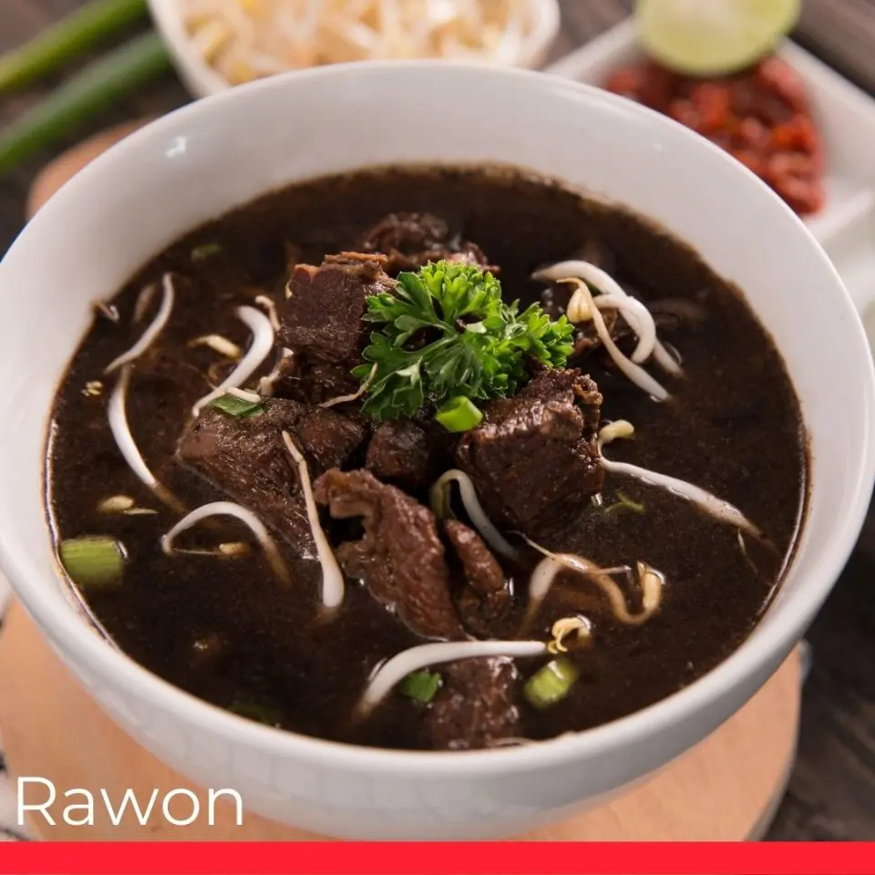

Description
Upon setting your eyes on this soupy dish for the first time, the pitch-black broth might seem unusual and uninviting. However, don’t let the aesthetic fool you. The black broth is a result of kluwak (Pangium) that is used as one of the main spices for this cow meat dish.
The slow-cooking process allows the flavor to penetrate deep into the meat and tenderize it so good that it melts in your mouth.
ingredients
Main Ingredients
- 1 pound beef shank, cubed
- 2 tbsp oil
- 6 ½ cups water
- 1 tbsp salt
- ¼ tsp black pepper
- 6 kaffir lime leaves
- 1 tsp lemongrass paste
- 1 stalk green onions , chopped
- 2 ½ tsp sugar
- 1 tsp tamarind paste, diluted in 1 tbsp water
Rawon Spice Mix
- 7 shallots, minced
- 3 cloves garlic, minced
- 5 keluak , steeped in hot water
- ½ inch fresh turmeric, sub 1/4 tsp ground turmeric
- 4 candlenuts, roughly chopped
Rawon Topping
- steamed rice
- sambal terasi or sambal oelek (red chili paste)
- shrimp crackers
- bean sprouts
- boiled eggs
- fried onions
Steps
- Into a large pot, heat oil on medium-high heat.
- Once oil is hot, add in the rawon spice mix, lime leaves, and lemongrass paste. Stir until mixture is fragrant.
- Add in beef shank and toss it in the spice mixture until well-combined. Continue to cook until beef is seared.
- Add in water, salt, pepper, tamarind paste, and granulated sugar. Turn down the heat to low-heat, and let simmer until the soup boils and meat is tender, about 1 hour.
- Turn off the heat, then stir in chopped green onions.
- Serve rawon over steamed rice, then garnish with your desired toppings. ENJOY!